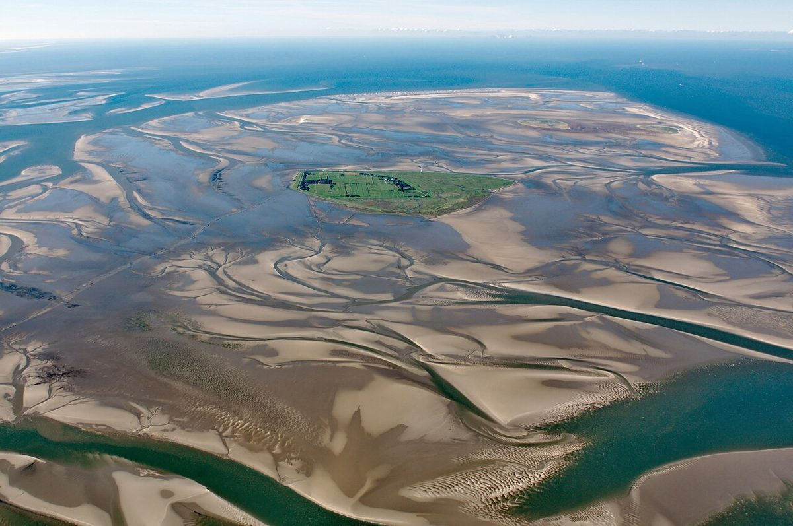

德国北海浅滩秘境：自然奇观与人文体验

潮汐之间的魔法世界
北海浅滩(Wattenmeer)是德国北部令人惊叹的自然奇观，被联合国教科文组织列入世界遗产名录。这片广阔的潮间带在涨潮时被海水淹没，退潮时则露出绵延数公里的滩涂，形成了独特的生态系统。
最佳旅行时间
5月至9月是探访浅滩的理想季节，此时天气温和，适合参加各种户外活动。7-8月可体验最壮观的退潮景象。记得提前查看潮汐时刻表，安全第一！
不可错过的亮点体验
1. 浅滩徒步(Wattwanderung)
跟随专业向导穿越潮湿的滩涂，寻找蛤蜊、螃蟹等海洋生物，这是了解浅滩生态系统最直接的方式。
2. 胡苏姆港城(Husum)
这座被称为"灰色明珠"的港口城市有着迷人的老城区和北海最大的扇贝雕塑，也是著名作家特奥多尔·施托姆的故乡。
3. 济耳特岛(Sylt)
北海最时尚的岛屿，拥有宽阔的沙滩和标志性的折篮椅(Strandkorb)，西岸的List小镇是观鸟天堂。
4. 国家公园游客中心
位于Tönning的多媒体体验馆Wattenmeerhaus，通过互动展项生动展示浅滩生态和候鸟迁徙路线。
美食推荐
不要错过当地特色美食：北海虾三明治(Krabbenbrötchen)、浅滩羊肉(Wattlämmer，盐沼羊肉)、各种新鲜捕捞的白鱼(Fischbrötchen)以及传统红果羹(Rote Grütze)。
交通指南
从汉堡乘火车约2小时可抵达胡苏姆(Husum)等主要城镇，岛上目的地需再换乘渡轮。自驾游最为灵活，沿途风景优美，但要注意某些岛屿禁止私家车通行。
北海浅滩是一处让人慢下脚步的地方，在这里，大自然的节奏取代了城市的匆忙，每一次潮起潮落都在讲述着永恒的循环故事。
Haiktec
Text mit KI erstellt und automatisch geprueft.